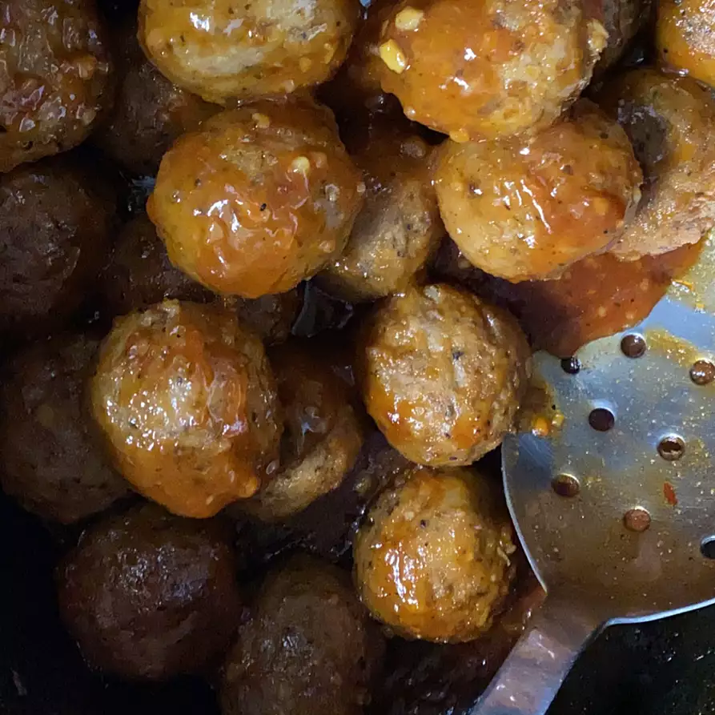

Honey Garlic Meatballs

Description
These Asian-inspired meatball appetizers are easy to throw together and
are a little different than all the other cocktail meatball recipes out
there. You can adjust the heat level by adding more or less garlic chili
sauce.
Ingridients
- 1/2 cup ketchup
- 1/4 cup brown sugar
- 1/4 cup honey
- 3 cloves garlic, minced
- 2 tablespoons soy sauce
- 2 tablespoons chile-garlic sauce
- 1 teaspoon Chinese five-spice powder
- 1(2pound) bag frozen cooked meatballs
Steps
-
Combine ketchup, brown sugar, honey, garlic, chile-garlic sauce, soy
sauce, and five-spice powder together in a bowl. Let sauce stand at room
temperature for 1 hour.
-
Add frozen meatballs to a slow cooker. Pour sauce over meatballs and
toss gently to coat.
- Cook on Low for for 4 hours, stirring occasionally.
Back to the main page